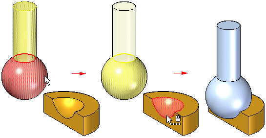
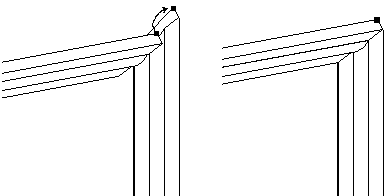
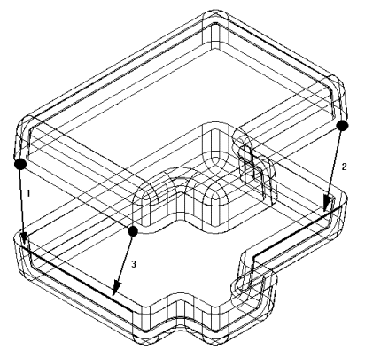
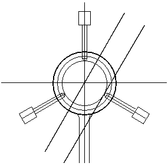
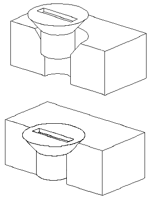

About the Connect relationship
(Home tab→Assemble group→Connect )
Use the Connect relationship between axial-symmetric parts, such as nuts and bolts in holes or on cylindrical protrusions.
Applying a connect relationship
A Connect relationship positions a keypoint on one part with a keypoint, line, or face on another part. The following image shows how a Connect relationship can be formed to position the center of a spherical face on one part with respect to a spherical face on another part.

The following examples demonstrate methods used to apply Connect relationships:
Point-to-point example
For this point-to-point connection, a Mate relationship is applied between the mitered corners of the parts. A Connect relationship ties a point on one part to the appropriate point on the other, and is used to properly connect the two corners.

Point-to-line example
For this point-to-line connection, a Mate relationship is applied between the faces of the two parts. Because the sides of each part are drafted, there are no part faces that can be used to apply a Planar Align relationship. Three Connect relationships between the keypoints on the top part and the linear edges on the bottom part are applied.

Point-to-plane example
For this point-to-plane connection, the lower right pin is positioned to a depth that just touches the surface of a reference plane using a Connect relationship.

Cone-to-cone example
For this cone-to-cone connection, the cone on the fastener is connected to the cone on the countersunk hole on the plate. When a Connect relationship is applied between two conical faces, the keypoint that represents the theoretical intersection of the individual cones is used to connect them. An offset value can also be applied between two conical faces.

Recognizable elements for the connect relationship
Keypoints
-
End points of lines, arcs, and ellipses
-
Midpoint of a line (edge centerline)
-
Arc center point
-
Circle center point
-
Elliptical element center point
-
Spherical surface center point
-
Conical surface center point
Lines
-
Linear edges (including tangent edges)
-
Reference axis
-
Axis of a cone, torus, spun surfaces and a sphere.
Surfaces
-
Planar part surfaces
-
Reference planes
-
Faces of a torus, cone or sphere
Connect relationship combinations
-
Connect a point on the first part to a point on the second part
-
Connect a point on the first part to a line on the second part
-
Connect a point on the first part to a face on the second part
-
Connect a line on the first part to a point on the second part
-
Connect a face on the first part to a point on the second part
An Axial Align or Connect relationship can be used to position a part with respect to a keypoint or a line in an assembly sketch.
How do I
Using the Mate commandModify the offset value for a Mate relationship
Using the Planar Align command
Apply an axial align relationship
Insert a part in an assembly
Apply a connect relationship
Using the Angle command
Using the Tangent command
Place a cam relationship
Apply a path relationship
Using the Parallel command
Apply a gear relationship
Using the Center-Plane command
Place a Rigid Set relationship
Using the Ground command
Update the working environment
Learn more
Assembly Relationships ManagerLook up more details
About the FlashFit relationshipAbout the Mate relationship
About the Planar Align relationship
About the Axial Align relationship
About the Insert relationship
About the Angle relationship
About the Tangent relationship
About the Cam relationship
About the Path relationship
About the Parallel relationship
About the Gear relationship
Position two parts by matching their coordinate systems
About the Match Coordinate Systems relationship
About the Center-Plane relationship
About the Rigid Set relationship
About the Ground relationship
Update Relationships command